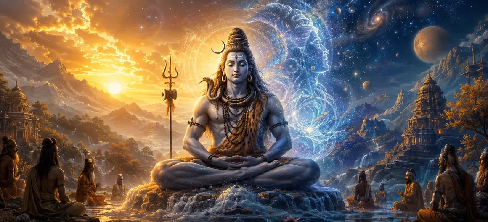

शिव का सिद्धांत - भाग 2
वायवीय संहिता का बयालीसवाँ अध्याय शिव तत्व की उत्कृष्ट आध्यात्मिक व्याख्या को जारी रखता है, जो उन्नत आध्यात्मिक अनुभूति को उजागर करता है।
ऋषि वायु बताते हैं कि समर्पित आंतरिक अनुशासन के माध्यम से व्यक्तिगत चेतना सर्वोच्च शिव सिद्धांत के अनंत विस्तार में कैसे विलीन हो जाती है।
यह अध्याय भगवान शिव के साथ प्रत्यक्ष अनुभवात्मक एकता चाहने वाले अभ्यासियों के लिए एक परिवर्तनकारी मार्गदर्शक के रूप में कार्य करता है।
अध्याय 42 की मुख्य बातें
उन्नत तत्त्व
पूर्ण शिव सिद्धांत के गहरे आयामों को उजागर करता है।
आंतरिक बोध
आत्मा और शिव के बीच अनुभवात्मक एकता पर ध्यान केंद्रित करता है।
ट्रान्सेंडेंट यूनियन
परिमित जागरूकता के अनंत चेतना में विलय की व्याख्या करता है।
भ्रम को दूर करने वाला
यह दर्शाता है कि सर्वोच्च ज्ञान किस प्रकार द्वैतवादी धारणाओं को मिटाता है।
ध्यान निपुणता
सर्वोच्च सत्य का अनुभव करने के लिए ध्यान संबंधी मार्ग प्रदान करता है।
कथा प्रवाह
व्यास के अवतारों पर अध्याय 43 की ओर तैयार करता है।
इस अध्याय में मुख्य विषय
शिव तत्व की अनुभूति को गहरा करना
भाग 1 की मूलभूत सच्चाइयों पर आधारित, ऋषि वायु साधकों को शिव तत्व की अनुभवात्मक अनुभूति में मार्गदर्शन करते हैं।
पूर्ण मुक्ति के लिए बौद्धिक समझ को प्रत्यक्ष आध्यात्मिक अनुभूति में विकसित होना चाहिए।
आत्मा और परमात्मा की प्रत्यक्ष एकता
अध्याय इस बात पर जोर देता है कि व्यक्तिगत आत्मा (जीव) अपनी सर्वोच्च प्राचीन अवस्था में भगवान शिव से मौलिक रूप से अलग नहीं है।
इस पहचान को समझने से अस्तित्व संबंधी सभी भय दूर हो जाते हैं और शुद्ध शांति मिलती है।
द्वैतवादी भ्रम का उन्मूलन
कठोर ध्यान और अनुग्रह के माध्यम से, 'प्रेक्षक' और 'अवलोकित' की द्वैतवादी धारणा शुद्ध गैर-दोहरी जागरूकता में पिघल जाती है।
साधक सृष्टि के प्रत्येक परमाणु में शिव को व्याप्त देखता है।
चेतना में ध्यानपूर्ण अवशोषण
जो अभ्यासी अपने मन को सर्वोच्च शिव सिद्धांत में स्थापित करते हैं, वे गहन ध्यान अवशोषण (समाधि) प्राप्त करते हैं।
यह अवस्था सांसारिक विकर्षणों से परे, चेतना को शाश्वत आनंद में स्थापित करती है।
आत्म-साक्षात्कार का सर्वोच्च फल
शिव तत्व को समझने का फल परम मुक्ति (मोक्ष) और जन्म और मृत्यु के चक्र से मुक्ति है।
मुक्त आत्मा भगवान शिव के तेजोमय ऐश्वर्य में सदैव निवास करती है।
शिव सिद्धांत प्रतिपादन का निष्कर्ष
अध्याय 42 में शिव तत्व पर भव्य व्याख्या का समापन हुआ, जिससे ऋषियों को आध्यात्मिक श्रद्धा में गहराई से डुबो दिया गया।
कथा सहजता से ऋषि व्यास के पवित्र अवतारों का वर्णन करने के लिए परिवर्तित हो जाती है।
अध्याय 43 की ओर
अध्याय 42 में शिव सिद्धांत की व्याख्या पूरी होने के बाद, ऋषि वायु अध्याय 43, 'व्यास के अवतार' का वर्णन करने की तैयारी करते हैं।
यह अगला अध्याय ऋषि व्यास की दिव्य अभिव्यक्तियों को उजागर करता है, जिन्होंने पवित्र वेदों और पुराणों को संहिताबद्ध किया।
अध्याय 42 की मुख्य शिक्षाएँ
अनुभवात्मक सत्य
शिव का ज्ञान प्रत्यक्ष आध्यात्मिक अनुभूति में विकसित होना चाहिए।
आत्मा-शिव की पहचान
सच्चा आत्म सर्वोच्च चेतना से भिन्न नहीं है।
अद्वैत दृष्टि
हर जगह शिव को देखने के लिए द्वंद्व को विघटित करता है।
गहरा अवशोषण
तत्व पर ध्यान केंद्रित करने से शाश्वत आनंद की प्राप्ति होती है।
परम मोक्ष
बोध संसार से पूर्ण मुक्ति प्रदान करता है।
अगला अध्याय
अध्याय 43 में व्यास के अवतारों की ओर ले जाता है।
आध्यात्मिक चिंतन
शिव सिद्धांत को महसूस करना कोई बौद्धिक उपलब्धि नहीं है, बल्कि हमारी अंतरतम चेतना को उसकी शाश्वत, दिव्य पहचान के प्रति प्रत्यक्ष जागृति है।
अध्याय 42 का संदेश जीना
अपनी दैनिक जागरूकता को भगवान शिव की दिव्य उपस्थिति में स्थापित करें।
द्वैतवादी चिंताओं और मानसिक उतार-चढ़ाव से परे जाने के लिए गहन ध्यान का अभ्यास करें।
आध्यात्मिक ज्ञान को मात्र दर्शन के बजाय एक जीवंत अनुभव के रूप में देखें।
प्रमुख आध्यात्मिक अवधारणाएँ
परम तत्त्व की प्रत्यक्ष अनुभवजन्य अनुभूति।
व्यक्तिगत आत्मा और परम शिव के बीच अद्वैत।
द्वैतवादी भ्रम और धारणा का उन्मूलन।
पूर्ण चेतना में ध्यानपूर्ण तल्लीनता।
भौतिक शरीर में रहते हुए मुक्ति प्राप्त हुई।
अध्याय 43 में व्यास के अवतारों की प्रस्तावना।
अध्याय सारांश
वायवीय संहिता अध्याय 42 शिव के सिद्धांत को प्रस्तुत करता है - भाग 2। गहन आध्यात्मिक प्रवचन को जारी रखते हुए, यह अध्याय प्रत्यक्ष अनुभवात्मक अनुभूति, आत्मा और शिव की अद्वैतता और द्वैतवादी भ्रम के उन्मूलन पर जोर देता है। यह अध्याय 43, 'व्यास के अवतार' के लिए पवित्र कथा तैयार करता है।
अक्सर पूछे जाने वाले प्रश्न
1. वायवीय संहिता अध्याय 42 का प्राथमिक विषय क्या है?
अध्याय 42 में शिव तत्व की गहन खोज जारी है, जिसमें उन्नत आध्यात्मिक आयामों, आंतरिक अनुभूति और शिव के साथ व्यक्तिगत चेतना के मिलन पर प्रकाश डाला गया है।
2. यह अध्याय भाग 1 पर कैसे आधारित है?
जबकि भाग 1 ने शिव तत्व की मूलभूत परिभाषा पेश की, भाग 2 इस बात पर केंद्रित है कि साधक इस परम वास्तविकता को कैसे आत्मसात करते हैं और अनुभव करते हैं।
3. शिव तत्व को समझने में आंतरिक अनुभूति क्या भूमिका निभाती है?
आंतरिक अहसास आत्मा और शिव के बीच अलगाव की झूठी भावना को दूर कर देता है, जिससे सर्वोच्च मुक्ति (मोक्ष) प्राप्त होती है।
4. इन शिक्षाओं को ऋषियों तक कौन पहुंचाता है?
वायवीय संहिता में वायु ऋषि द्वारा पवित्र ज्ञान की व्याख्या की गई है।
5. अध्याय 42 के बाद नेविगेशन के लिए अगला अध्याय कौन सा है?
नेविगेशन के अगले अध्याय का शीर्षक 'व्यास के अवतार' है।
"जब व्यक्तिगत चेतना आंतरिक अनुभूति के माध्यम से शिव तत्व के अनंत विस्तार में विलीन हो जाती है, तो सभी द्वंद्व गायब हो जाते हैं, और शाश्वत मुक्ति प्राप्त होती है।"
वायवीय संहिता के माध्यम से जारी रखें
अध्याय 42 का समापन शिव का सिद्धांत - भाग 2। व्यास के अवतारों को जारी रखें।